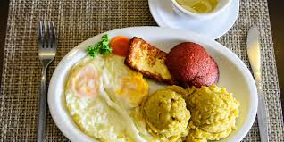
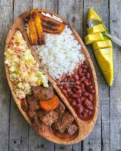
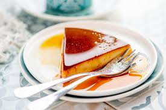

Food
1 / 3

Taste the deliciousness of Dominican mangu, a popular dish that embodies Caribbean
comfort food. Imagine a plate of mashed plantains, seasoned just right and topped with sautéed
onions for a savory kick. It is a taste of Dominican tradition, blending flavors from Africa and
Spain. Whether you are starting your day with a breakfast or enjoying it with lunch or dinner,
Dominican mangu promises a flavorful experience. Enjoy the friendly Dominican vibe through this
special dish that is full of culture and tasty flavors.
2 / 3

Besides the amazing mangu, you can try "La Bandera Dominicana," the classic dish that
represents Dominican food. This is a plate with rice, beans, and meat -usually chicken or beef-
cooked perfectly with tasty spices. This meal not only tastes great but also shows the culture and
tradition of the country. Experience the delicious flavors and friendly atmosphere of Dominican
cuisine with this special dish that tells a story of heritage and tasty food.
3 / 3

This is looking awesome! But what about desserts? When it comes to delicious sweets,
the Dominican Republic can bring Flan to the table, a delicious dessert that will delight your taste
buds. Consists of a smooth, creamy caramel custard with a touch of vanilla, served in a sweet
caramel sauce. Each bite is a treat, showing off the rich flavors and culinary skill of the country.
Whether you're enjoying it after a meal or as a special treat, Dominican flan is a delightful taste
of Caribbean culture.